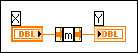
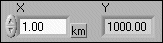
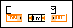
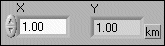

Any of the following actions can cause this error:
To correct this error, right-click the unit label of the unit you want to change and select Build Unit String from the shortcut menu to display the Build Unit String dialog box. Select a unit available in LabVIEW and click the OK button.
To correct this error, remove the units from the numeric object before wiring it to the Expression Node or Formula Node and add the units back to the object after the node executes. To remove or add units, use the Convert Unit function.
It is best to wire physical numbers only to other compatible physical numbers. To correct this error, choose one of the following options:
To add units to the pure number, right-click the pure number and select Visible Items»Unit Label from the shortcut menu. LabVIEW creates a unit label for the display. Type the name of the unit you want to add.
To remove units from the physical number, double-click the unit label with the Labeling tool and press the <Delete> key.
To convert a pure number to a physical number or vice versa, use the Convert Unit function, shown in the following illustration.
If the input to this function is a pure number, Convert Unit adds the specified unit to create a physical number. If the input is a physical number, Convert Unit converts the number to the specified unit and removes the unit, to create a pure number. Make sure that the unit of the input is compatible with the specified unit. Refer to the following examples:
Example 1—Changing a physical number to a pure number


Notice that the function converts the number from kilometers to meters first.
Example 2—Adding a unit to a pure number

